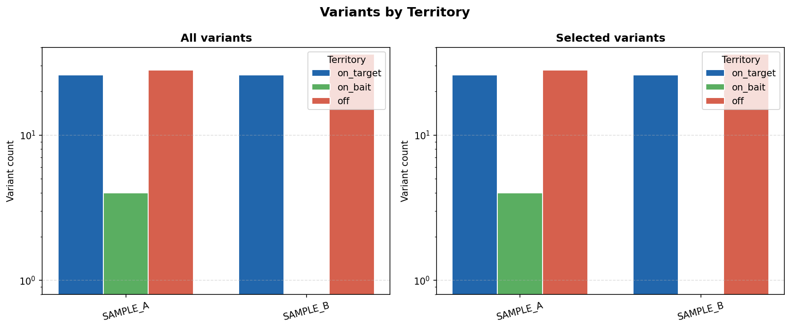
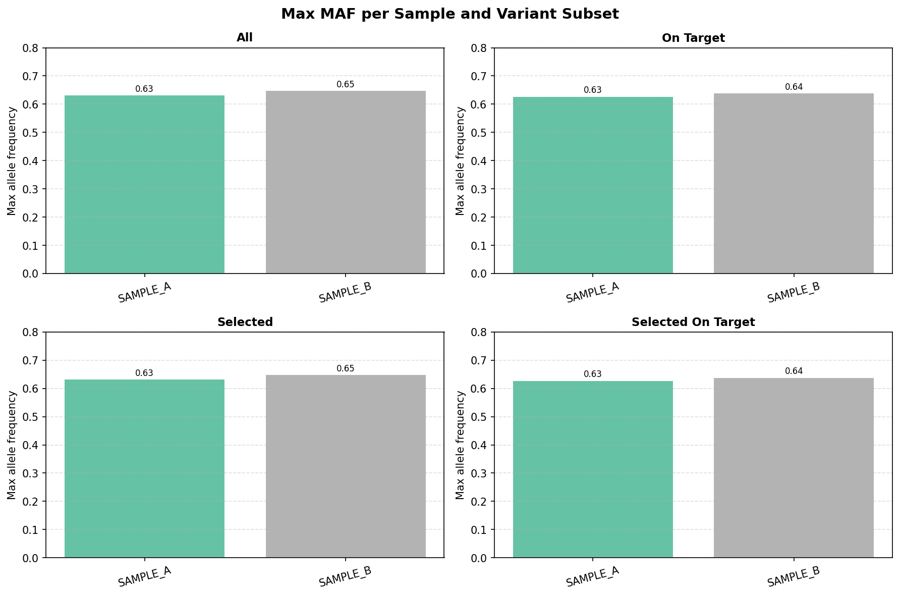
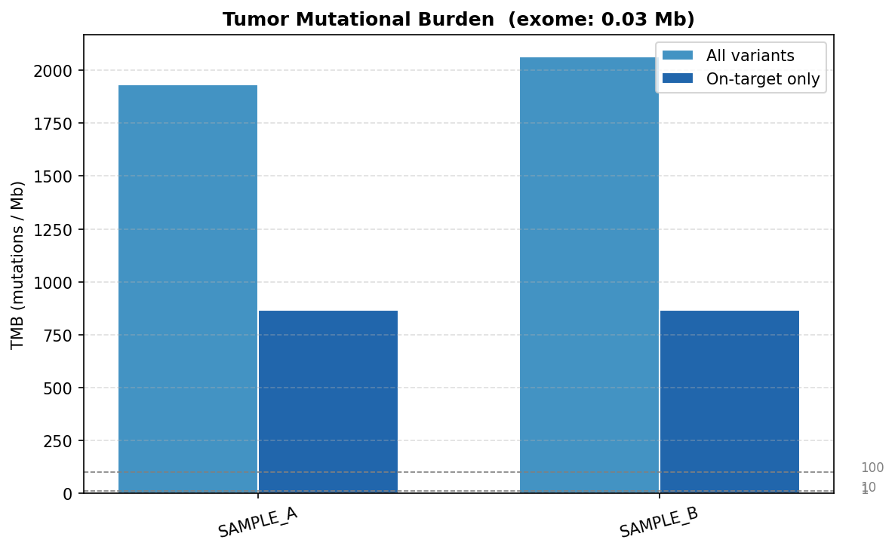
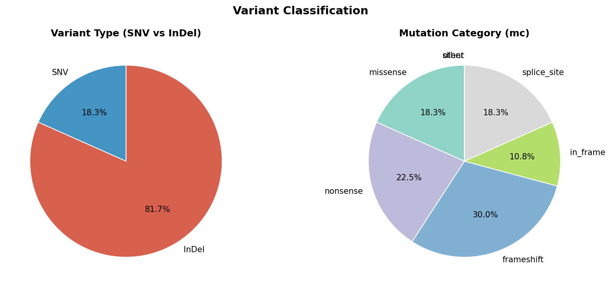
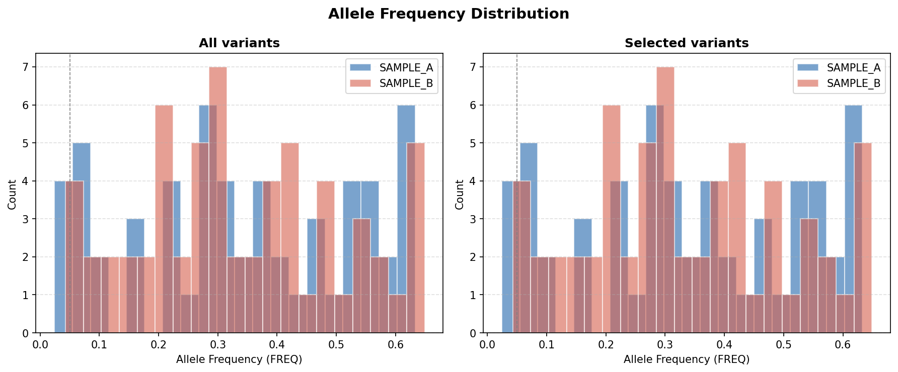
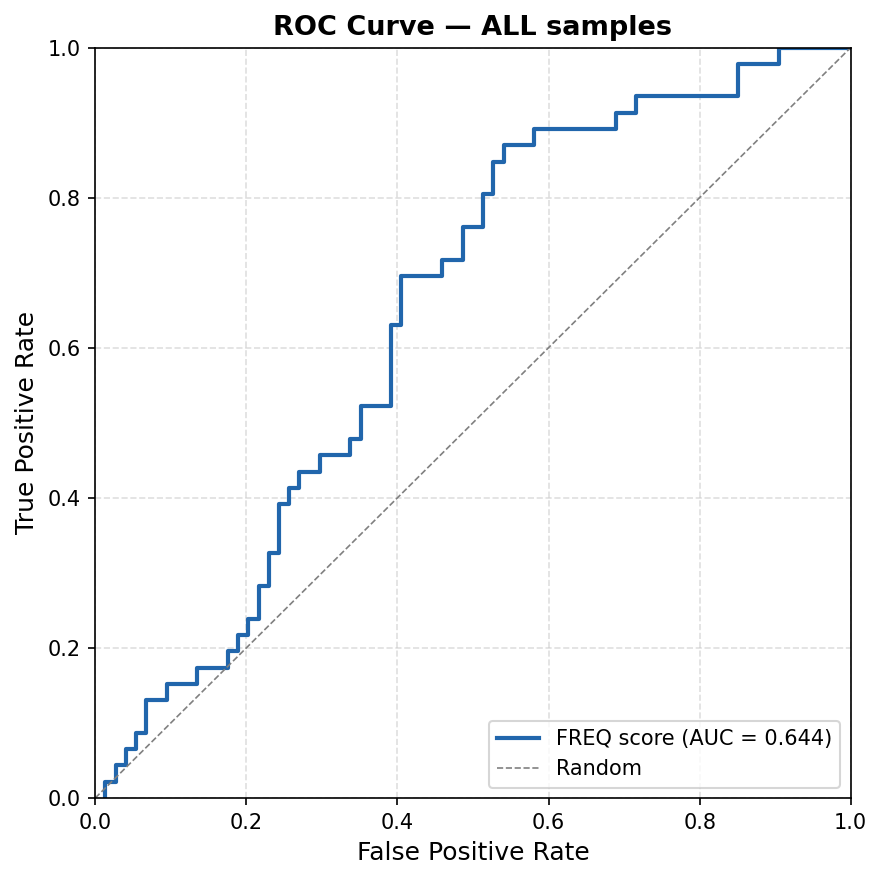
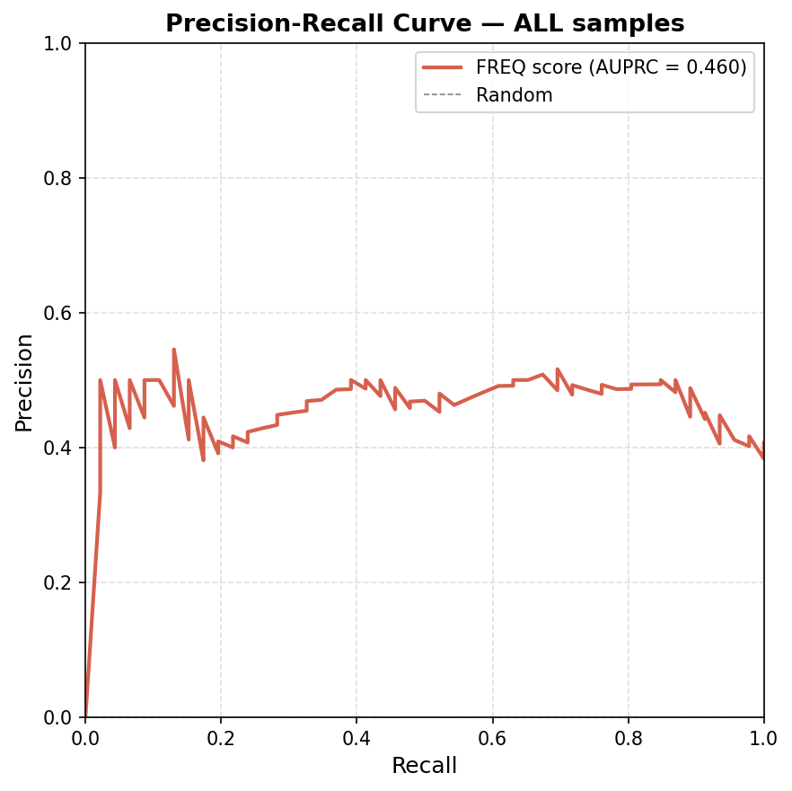
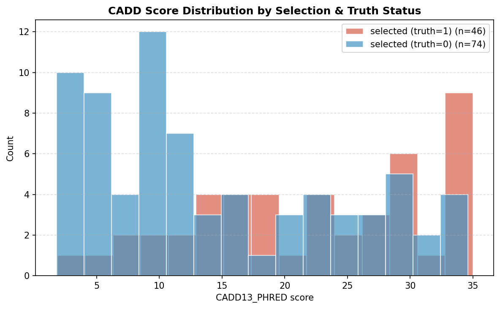
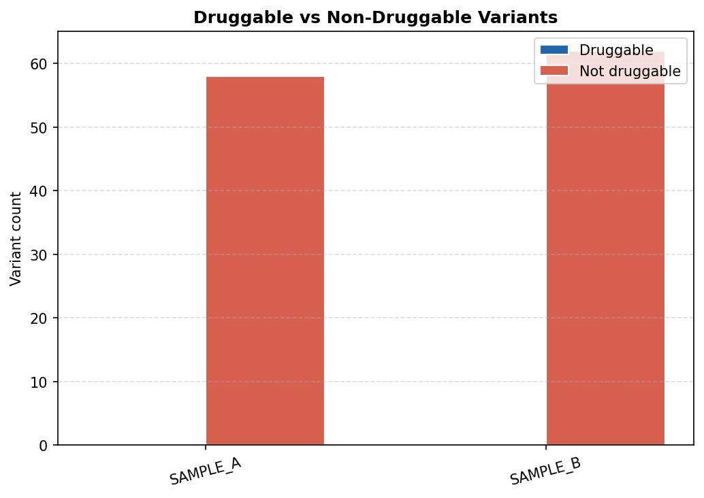

📋 Test Summary
120
Total Variants
2
Samples
120
Candidates Selected
0
Druggable Variants
0.644
AUROC
0.460
AUPRC
0.03 Mb
Exome Target Size
✅ PASS
Overall Result
| Test | Status | Details |
|---|---|---|
| Load test CSV | PASS | 120 rows, 2 samples: SAMPLE_A, SAMPLE_B |
| BED territory annotation | PASS | on_target=52, on_bait=4, off=64 |
| Candidate selection | PASS | 120/120 selected (100.0%) |
| Drug annotation | PASS | 0/120 druggable variants |
| TMB computation | PASS | exome=0.030 Mb; TMB (on-target)=['866.67', '866.67'] |
| MAF analysis | PASS | max MAF all={SAMPLE_A:0.633, SAMPLE_B:0.649} |
| VCF conversion | PASS | Wrote 120 VCF records to calls_test.vcf |
| ROC/PR computation | PASS | AUROC=0.6439, AUPRC=0.4601, best F1=0.635 at thresh=0.262 |
📁 Output File Locations
📁 test_results_final/
│ 📄 benchmark_summary.csv (151 bytes)
│ 📄 calls_test.vcf (10,027 bytes)
│ 📄 drug_summary.csv (75 bytes)
│ 📄 maf_summary.csv (243 bytes)
│ 📄 pr_sweep.csv (4,367 bytes)
│ 📄 selection_summary.csv (82 bytes)
│ 📄 territory_summary.csv (144 bytes)
│ 📄 tmb_summary.csv (121 bytes)
│ 📁 plots/
│ │ 📄 cadd_distribution.png (46,314 bytes)
│ │ 📄 druggable_summary.png (35,807 bytes)
│ │ 📄 freq_histogram.png (56,577 bytes)
│ │ 📄 maf_facets.png (87,753 bytes)
│ │ 📄 pr_curve.png (63,004 bytes)
│ │ 📄 roc_curve.png (61,908 bytes)
│ │ 📄 territory_bar.png (42,563 bytes)
│ │ 📄 tmb_bar.png (49,099 bytes)
│ │ 📄 variant_type_pie.png (91,598 bytes)
📊 Territory Annotation
| Sample | Territory | Count |
|---|---|---|
| SAMPLE_A | on_target | 26 |
| SAMPLE_A | on_bait | 4 |
| SAMPLE_A | off | 28 |
| SAMPLE_B | on_target | 26 |
| SAMPLE_B | on_bait | 0 |
| SAMPLE_B | off | 36 |
🎯 Candidate Selection
| Sample | Total | Selected | % Selected |
|---|---|---|---|
| SAMPLE_A | 58 | 58 | 100.0% |
| SAMPLE_B | 62 | 62 | 100.0% |
💊 Drug Annotation
| Sample | Total | Druggable | SNV | InDel |
|---|---|---|---|---|
| SAMPLE_A | 58 | 0 | 9 | 49 |
| SAMPLE_B | 62 | 0 | 13 | 49 |
📈 TMB (Tumor Mutational Burden)
| Sample | Exome (Mb) | TMB on-target | TMB all |
|---|---|---|---|
| SAMPLE_A | 0.03 | 866.667 | 1933.333 |
| SAMPLE_B | 0.03 | 866.667 | 2066.667 |
🧪 Performance Metrics (ROC / PR)
| Sample | Score | AUROC | AUPRC | Best F1 | Best Threshold | N positives | N total |
|---|---|---|---|---|---|---|---|
| ALL | FREQ | 0.6439 | 0.4601 | 0.6349 | 0.2624 | 46 | 120 |
Threshold Sweep (top 10 by F1)
| FREQ threshold | Precision | Recall | F1 | TP | FP | FN |
|---|---|---|---|---|---|---|
| 0.2624 | 0.5 | 0.8696 | 0.6349 | 40 | 40 | 6 |
| 0.2401 | 0.4881 | 0.8913 | 0.6308 | 41 | 43 | 5 |
| 0.262 | 0.4938 | 0.8696 | 0.6299 | 40 | 41 | 6 |
| 0.2641 | 0.5 | 0.8478 | 0.629 | 39 | 39 | 7 |
| 0.2293 | 0.4824 | 0.8913 | 0.626 | 41 | 44 | 5 |
| 0.2619 | 0.4878 | 0.8696 | 0.625 | 40 | 42 | 6 |
| 0.2637 | 0.4937 | 0.8478 | 0.624 | 39 | 40 | 7 |
| 0.2255 | 0.4767 | 0.8913 | 0.6212 | 41 | 45 | 5 |
| 0.2415 | 0.4819 | 0.8696 | 0.6202 | 40 | 43 | 6 |
| 0.2677 | 0.4935 | 0.8261 | 0.6179 | 38 | 39 | 8 |
📉 Visualisations

Variants by Territory (faceted: all vs selected, log-scale)

Max Allele Frequency per Sample and Variant Subset

Tumor Mutational Burden (TMB) — reference lines at 1/10/100 mut/Mb

Variant Type (SNV/InDel) and Mutation Category Distribution

Allele Frequency Distribution (all vs selected)

ROC Curve — AUROC (higher = better classifier performance)

Precision-Recall Curve — AUPRC (accounts for class imbalance)

CADD Score by Selection and Truth Status

Druggable vs Non-Druggable Variants per Sample